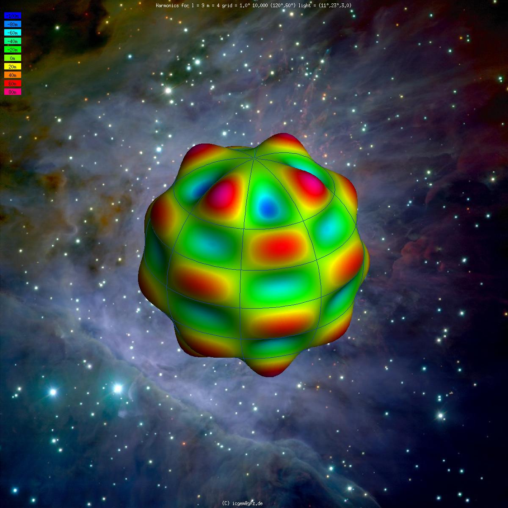
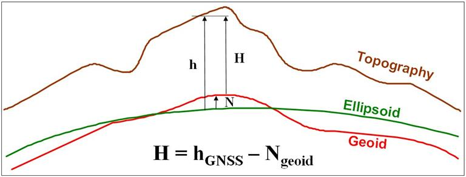

Reference Systems - Vertical
Reading Guides
- Chapter 2 2.3.4 onwards and 1st edition book Chapter 3
- Are vertical datums related to horizontal datums? If yes, in which way?
- List two different types of height, and name their differences.
- What is the difference between the normal and the vertical?
- What is a tide gauge?
- Why could the adoption of a single vertical datum over large distances be problematic for height measurement?
Geoid
- The true shape of the Earth is called the geoid
- Defined as: that equipotential surface that most closely corresponds to mean sea level
- The geoid is a real physical surface dictated by gravity — we approximate it using gravitational models (e.g., EGM2008), but the geoid itself exists independently of our models
- The spheroid/ellipsoid is the simplified mathematical approximation
- Spheroid approximates the geoid to within ±100 m (RMS ~30 m)
Geoid as an Equipotential Surface
- Equipotential surface: A surface everywhere perpendicular to the direction of gravity
- Gravity is affected by irregularities in density of Earth’s crust and mantle
- Therefore the equipotential surface is somewhat irregular
Discussion Questions: Geoid Concepts
“Is the geoid a model or the name of the actual shape of the Earth? Is there any difference between actual and true shape?”
“In my understanding, equipotential describes a vector at each position that points towards the center. How does it follow that there are different heights?”
“Why must every diagram of the geoid greatly exaggerate its deviation from the spheroid?”
Answers: Geoid Concepts
Model or actual shape? Both — “geoid” is the name for the real shape; “equipotential surface” describes what kind of surface it physically is.
Equipotential doesnot mean pointing to centre. Gravity doesn’t point exactly to the centre because of mass irregularities. Equipotential means same gravitional potential, not same direction.
Why exaggerate diagrams? Deviation is less than 100 m over a body of ~6400 km radius. At true scale, geoid and spheroid would be indistinguishable.
Vertical and Normal
- Vertical: direction of gravity at a point (what plumb line shows); perpendicular to the geoid; natural direction
- Normal: Geometric perpendicular to the spheroid/ellipsoid, Mathematical direction computed from an equation.
- The angle between them = deviation of the vertical (ξ, η)
- Typically a few seconds of arc
Discussion Questions: Vertical vs Normal
“Why is the term vertical used for geoid and normal for spheroid? Does the difference lie in shape, definitions, or both?”
“What is meant by the deviation of the vertical and why does it exist?”
“Please discuss: astronomical coordinates are always unique (it is impossible for two points to have the same latitude)”
Answers: Vertical vs Normal
Different terms because different concepts. “Vertical” = physics (gravity defines it). “Normal” = geometry (maths defines it).
Deviation of the vertical = the small angle between the two directions. Exists because local mass anomalies pull gravity slightly away from the geometric normal. Typically just a few arcseconds.
Spherical Harmonic Expansion
- The geoid globally is expressed as a spherical harmonic expansion
- Like a Fourier series on a sphere — sum of functions of increasing spatial frequency
- Low-degree terms → broad, continent-scale features
- High-degree terms → fine, local details
- Smallest wavelength: λ = 180° / NMAX
| NMAX | Wavelength | Resolution |
|---|---|---|
| 36 | 5° | ~500 km |
| 360 | 0.5° | ~50 km |
| 2190 | 0.08° | ~9 km |
Spherical Harmonic Expansion

Ince, E. S., et al. (2019). ICGEM–15 years of successful collection and distribution of global gravitational models. Earth system science data, 11(2), 647-674.
Discussion Questions: Spherical Harmonics
“How much do we need to know about the coefficients of a spherical harmonic expansion?”
“What is the wavelength, as in ‘the global Earth model expresses the geoid in terms of functions of increasingly small wavelength’ — how can one imagine it?”
Answers: Spherical Harmonics
How much to know? Conceptual understanding is sufficient: it’s a Fourier series on a sphere. Higher degree = finer detail. NMAX sets the resolution limit at 180°/NMAX.
Wavelength: visualizations are here
Heights: Ellipsoidal vs Orthometric

https://canadiangis.com/canadian-geodetic-vertical-datum-cgvd2013-is-now-available.php
Heights: The Relationship
- Ellipsoidal height (h): distance from the ellipsoid — what GPS gives
- Orthometric height (H): distance from the geoid — “height above sea level”
- Relationship: h = H + N
- Or in relative terms: Δh = ΔH + ΔN -> mostly used in practice in this form
Why GPS Gives Ellipsoidal Height
- GPS measures distances from satellites → computes 3D position (X, Y, Z)
- These Cartesian coordinates are projected onto the WGS84 ellipsoid → gives h
- GPS is purely geometric — it measures distances, not gravity
- The geoid is a physical/gravity-based surface — GPS cannot “see” it
- To convert: H = h − N → we must know the separation N
How Orthometric Height Is Obtained
- Orthometric height is obtained by levelling. see this video for basics of levelling
- Start at a tide gauge — H = 0
- Measure height differences step-by-step with a level instrument and calibrated staffs
- Establish bench marks with known H values across the country
- For precise applications: corrections needed for convergence of equipotential surfaces
Discussion Questions: Heights
“Why does geoid-spheroid separation need to be used to correct heights from GPS? Why do satellites observe height from the spheroid?”
“How do you get height above geoid or mean sea level in reality?”
“How can you measure the orthometric height H which is required to calculate the ellipsoidal height h?”
“For accurate 3D measurements, is it required to take N for every point separately? How does modern surveying equipment handle this?”
Answers: Heights
Why GPS gives spheroidal height: GPS is geometry-based (satellite distances). Computes cartesian 3D coordinates X,Y,Z that are transformed to an elliposidal coordinate — so it can only reference the ellipsoid, not the geoid.
How to get H in reality: By levelling from a tide gauge (H=0) outward through a network of bench marks.
N for every point? Ideally yes. Modern equipment uses built-in geoid models (e.g., EGM2008) to automatically compute N and convert h → H in real-time. Accuracy depends on the geoid model quality at that location.
Local vs Global Datums and N
- WGS84 (global): one spheroid best-fitting the entire Earth — may be offset locally
- Local datum: spheroid positioned to fit the geoid closely in a specific region
- With a local datum, the slope of the geoid is less severe — N varies less
- “Slope” = how quickly N changes as you move horizontally
- UK example: N ranges only 0–5 m with respect to British datum (not true w.r.t. WGS84)
Can N Be Considered Constant? (Section 3.1.1)
- cm-level accuracy: not safe to assume constant beyond ~200 m
- 2 m accuracy: constant over ~30–50 km
- But in some regions, N changes by 10 m over just 50 km
- Local datums ease this — geoid slope is gentler
- But short-wavelength undulations persist regardless
Geoid as a Uniform Slope (Section 3.1.2)
- Critical for GPS applications: if the geoid approximates a sloping plane, the slope is absorbed by similarity transformations when tying to local control points
- Only non-linear bumps (undulations) remain as residual errors
| Section length | Precision of slope model |
|---|---|
| ~50 km | ~50 cm |
| ~20 km | ~10–15 cm |
- Results from fairly rugged terrain (heights up to 1000 m); flatter terrain → better
Discussion Questions: Separation and GPS
“When modeling N as a uniform slope, do shorter distances always result in more accurate representations?”
“How does the acceptable error (50 cm over 50 km, 10–15 cm over 20 km) influence decisions in precise GPS applications?”
Answers: Separation and GPS
Shorter = always better? It depends on terrain roughness. A 20 km section over mountains may be worse than 50 km over flat land. Shorter distances just reduce the chance of encountering undulations.
Influence on GPS decisions: These errors set project size limits. For cm-level work, GPS baselines should be short and tied to dense control. For 0.5 m tolerance, ~50 km baselines are acceptable. The transformation absorbs the linear slope — only the residual undulations limit accuracy.
Advantages of Ellipsoidal Heights
- Not all applications need a gravity-based height reference
- Volcano monitoring:
- Only need change in height over time → Δh = ΔH
- N is constant at the same point
- Avoids false changes from improved geoid models in future
- Aircraft landing:
- Aircraft (GPS) and obstacles both surveyed in ellipsoidal height
- Height clearance = haircraft − hobstacle → N cancels out
Discussion Questions: Height Applications
“In what situations would using ellipsoidal heights be more advantageous than gravity-related heights?”
“Why is the orthometric height generally preferred in construction and engineering?”
Answers: Height Applications
Ellipsoidal preferred when: monitoring change over time, comparing GPS-surveyed objects to each other, or when gravity direction is irrelevant.
Orthometric preferred in construction because: water flows downhill relative to the geoid, not the ellipsoid. Construction needs a physically meaningful height tied to gravity.
Mean Sea Level
- MSL is measured over a long period
- This covers all major tidal constituents (moon, sun, resonance effects)
- MSL ≈ geoid, but not exactly — permanent ocean currents cause up to ~1 m difference
- https://www.youtube.com/watch?v=q65O3qA0-n4
Discussion Questions: Mean Sea Level
“What is the significance of 18.9 years in measuring mean sea level?”
“What is the purpose of tide gauges for the vertical ellipsoid height?”
Answers: Mean Sea Level
18.6 years (lunar nodal cycle): related to moon’s cycle, so to average all the tidal effects.
Tide gauges and ellipsoidal height: Tide gauges define H=0 (the starting point for orthometric heights). If one puts the GPS there and measures the ellipsoidal height, then the link can be established.
National Datum Offsets (Rapp, 1994)
- Each country’s tide gauge sits on a slightly different equipotential surface
- Rapp compared N from two independent methods:
- N = h − H (GPS minus levelling) → tied to local tide gauge
- N from global model → tied to the ideal geoid
- The mismatch = country’s datum offset from the ideal geoid
| Country | Offset |
|---|---|
| Germany | +4 cm |
| USA (NGVD29) | −26 cm |
| Great Britain (Newlyn) | −87 cm |
| Australia (Mainland) | −68 cm |
Multiple Tide Gauges Problem
- Australia AHD71: 30 tide gauges around the coast
- Each establishes the datum at a different equipotential surface
- The reference surface changes gradually from place to place
Discussion Questions: Vertical Datums
“Why could the adoption of a single vertical datum over large distances be problematic?”
“Is there a good rule of thumb for how many vertical datums you’d need over larger distances?”
“Why do we define vertical datums using MSL? Why not use Mt. Everest as reference?”
“Does cut-and-fill of large areas affect the geoid?”
“Can you clarify Figure 3.6 (1st edition) and how it relates to vertical datums?”
Answers: Vertical Datums
Single datum problematic because: MSL differs at different tide gauges (different equipotential surfaces). Over large distances, these offsets accumulate. Channel Tunnel example: UK–France offset was ~30 cm.
Rule of thumb? No fixed rule. Depends on required accuracy and the variability of MSL along the coast.
Why not Mt. Everest? MSL is physically meaningful — tied to gravity, accessible globally via tide gauges, and water/engineering applications reference it naturally. A mountain peak is local, inaccessible, and has no physical connection to gravity equipotential.
Cut-and-fill affecting geoid? Negligibly. The geoid responds to larger scale mass distribution, not surface-level earthworks.
Figure 3.6: Shows how tying a datum to multiple tide gauges creates a reference surface that warps between different equipotential surfaces
Vertical Datums for Marine Applications
- MSL is inappropriate for nautical charts in tidal areas
- At low tide, actual depth available < depth shown relative to MSL
- Chart Datum is used instead — typically set at Lowest Astronomical Tide (LAT)
- Charted depths represent the minimum available
| Datum | Used for | Reference level |
|---|---|---|
| LAT / Chart Datum | Depth below water | Lowest expected water |
| MSL | General heights | Average water level |
| MHWS | Bridge clearance | High water level |
Marine Datums: Key Details
- Chart Datum is defined locally at discrete tide gauge points
- LAT is not an equipotential surface — it varies with tidal range and coastal topography
- Along south coast of England, LAT differs from ODN by:
- Newlyn: −3.05 m | Portsmouth: −2.73 m | Dover: −3.67 m | Bristol: −6.50 m
- Between gauges, interpolation uses co-tidal and co-range charts
- For offshore engineering, Chart Datum is inappropriate — MSL (equipotential) is needed for correct relative seafloor depths
Discussion Questions: Marine Datums
“What are co-tidal and co-range charts?”
“How do vertical CRS based on water level datums differ from onshore systems?”
“Wouldn’t it be easier to have an internationally usable height standard for marine applications connected to GPS?”
Answers: Marine Datums
Co-tidal charts:
Water level datums differ from onshore in two ways: (1) they use depths not heights, and (2) they are not equipotential surfaces — LAT varies with local tidal range and marine topography.
GPS-based marine standard?
Engineering Datums and CRS
- Used for local projects: construction sites, offshore, moving platforms
- Datum point: a physical mark with assigned coordinates
- Coordinates chosen to avoid negative values in project area eg. 1000m
- Plant north: a direction aligned with the site — may differ from geographic north
- Height may be loosely related to actual height above sea level or arbitrary
- Moving platforms (ships, aircraft): datum origin on the object or virtual intersection of axes
Compound Coordinate Reference Systems
- Often need 3D positions: easting, northing + gravity-related height
- Two independent CRS are combined:
- Horizontal (projected or geographic CRS)
- Vertical (vertical CRS)
- Examples:
- British National Grid + Ordnance Datum Newlyn
- Map Grid of Australia + AHD height
- NAD83 + NAVD88
- A compound CRS is not a true 3D geodetic system
Registers of Coordinate Reference Systems
- Rather than specifying all CRS details, use a registry identifier
- Examples: BKG, EPSG Geodetic Parameter Dataset
- Each CRS gets a unique code (e.g., EPSG:4954 for NAD83 geocentric)
- Care needed: ensure registry definition exactly matches your requirements
- Repositories retain erroneous records (marked invalid) for historic purposes
Discussion Questions: Datums and CRS
“Are vertical datums related to horizontal datums? If yes, in which way?”
“Why can’t we combine a 3D geodetic system and gravity-related vertical system as a compound CRS?”
“Is the unit of measurement standardized, or is conversion between units still widespread?”
Answers: Datums and CRS
Vertical related to horizontal? Defined independently, but linked through h = H + N. Combined in practice as compound CRS. Changing one doesn’t change the other — but we need both for 3D positioning.
Why not 3D geodetic + gravity vertical? Because they use fundamentally different reference surfaces (ellipsoid vs geoid). A compound CRS acknowledges they are separate systems. A true 3D system would need a single consistent surface.
Unit standardization?
Next Lecture
- 07.05.2026 - Chapter 3
- Read Chapter 3.1 - 3.5 on Map Projections
Reading Guide
- Answer (for yourself) the following questions:
- Name a key difference between the grid and the graticule
- Does a map projection have one or many scale factors?
- What are false easting and northing, and what is their purpose?
- Name two properties of a “good” map projection
- What is UTM?